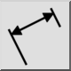

Rotert (lineær)
Verktøylinje/ikon:


Meny: Dimensjon > Rotert (lineær)
Snarvei: D, L
Kommandoer: dimlinear | dimrotated | dl
Dette er en automatisk oversettelse.
Verktøylinje/ikon:


Oppretter roterte (lineære) dimensjoner. Lineære dimensjoner brukes vanligvis til å måle vertikale eller horisontale avstander, men kan også måle avstander med en hvilken som helst annen vinkel.
koordinat i kommandolinjen.